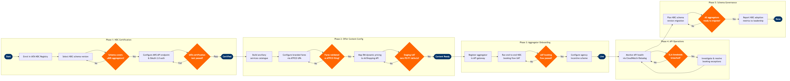

| Step | L4 Step Name | KPI / Target | Pain Point / Risk | Gate |
|---|---|---|---|---|
| 1.1 | Enrol airline in IATA NDC Registry | IATA NDC Level 4 certification achieved; registration completed within 10 business days of approval | IATA NDC certification is tiered (Levels 1–4) — most airlines must iterate through lower tiers before reaching Level 4 (full offer & order), adding 3–6 months to NDC launch timelines | |
| 1.2 | Select NDC API schema version and message set | Selected schema version covers ≥80% of target aggregator ecosystem by booking volume | Schema version fragmentation — Amadeus, Sabre, and Travelport aggregators each support different NDC versions; a version covering the full ecosystem may not yet exist, forcing the airline to maintain parallel schema support | ⚠ |
| 1.3 | Configure NDC API endpoint and authentication | API endpoint availability SLA ≥99.9%; OAuth token issuance latency ≤200ms | Airlines with legacy PSS (non-NDC-native Amadeus Altéa or Sabre) must build an EDIFACT-to-NDC translation middleware layer — this adapter introduces latency and is a single point of failure between NDC offer requests and live inventory | |
| 1.4 | Submit NDC API for IATA certification testing | Certification pass rate ≥95% of mandatory test scenarios on first submission; resubmission cycle ≤15 business days | IATA certification test harness does not cover all real-world aggregator edge cases — airlines frequently pass IATA tests but encounter message interpretation failures in live aggregator connectivity, requiring post-certification fixes | ⚠ |
| 2.1 | Build ancillary services catalogue for NDC | Ancillary catalogue completeness ≥90% of available products accessible via NDC ServiceList; content refresh cycle ≤48 hours | Ancillary catalogue updates in PSS do not auto-sync to NDC ServiceList — product pricing or availability changes in Amadeus Altéa must be manually reflected in the NDC layer, causing offer inconsistency during peak sale windows | |
| 2.2 | Configure branded fare families in NDC OfferPrice | Branded fare NDC display parity with GDS content ≥98% of fare families; ATPCO UPA filing-to-NDC sync ≤24 hours | ATPCO UPA content must be filed separately from NDC fare data — dual-filing increases operational overhead and creates version drift between GDS branded fare display and NDC OfferPrice responses, exposing the airline to consumer-facing inconsistencies | ⚠ |
| 2.3 | Map RM dynamic pricing to NDC AirShopping response | AirShopping API response time ≤800ms at p95; dynamic pricing accuracy vs RM system ≥99.5%; availability sync lag ≤30 seconds | NDC AirShopping calls trigger real-time RM inventory lookups — aggregator shopping bots generating >500 req/sec can saturate RM system capacity if not rate-limited, causing availability query failures that surface as blank NDC offer grids to agencies | |
| 2.4 | Validate NDC offer-to-order round trip in staging | Zero P0/P1 defects before aggregator onboarding gate; ≤5 P2 defects accepted with documented workaround | NDC OrderCreate-to-PSS PNR translation errors cause silent booking failures — bookings appear confirmed in the NDC order layer but no PNR is created in Amadeus Altéa, resulting in passengers presenting at check-in with no reservation | ⚠ |
| 3.1 | Register NDC aggregator in API gateway | Aggregator API credentials provisioned within 5 business days of commercial agreement execution | Aggregator onboarding requires simultaneous legal, commercial, and technical sign-off across three separate airline departments — cross-team coordination delays average 15–20 business days beyond the contractual 5-day SLA in practice | |
| 3.2 | Conduct end-to-end NDC booking flow UAT with aggregator | End-to-end booking flow success rate ≥99% in UAT; ancillary attachment and retrieval validated across all test scenarios | Even IATA-certified aggregators interpret NDC message schemas differently — the airline must maintain aggregator-specific message transformation rules in a compatibility layer, increasing maintenance cost linearly with the number of connected aggregators | ⚠ |
| 3.3 | Configure NDC agency incentive and cost model | NDC booking share of total indirect bookings ≥25% within 12 months of aggregator go-live; NDC cost-per-segment <GDS segment fee by ≥30% | Airlines with GDS 'full content' agreements face contractual penalties for offering NDC-exclusive fares — withholding content from traditional GDS to drive NDC adoption may trigger financial penalties that exceed short-term NDC savings | |
| 4.1 | Monitor NDC API transaction health and SLA compliance | NDC API uptime ≥99.9%; AirShopping p95 latency ≤800ms; transaction error rate ≤0.5% of all NDC calls | NDC API errors are not always surfaced to booking agents — silent failures in AirShopping or OfferPrice cause agency tools to silently fall back to GDS EDIFACT content, masking NDC availability problems from operations teams until SLA reports are reviewed | ⚠ |
| 4.2 | Investigate and resolve NDC booking exceptions | NDC booking exception resolution ≤4 hours for P1 (passenger impacted at airport); ≤24 hours for P2 (booking error, no immediate travel) | NDC OrderCreate failures that partially commit to PSS create 'ghost bookings' — passenger holds payment confirmation but no PNR exists, requiring manual reconciliation between the NDC order layer and Amadeus Altéa that can take hours during high-traffic periods | |
| 5.1 | Plan and execute NDC schema version migration | Schema migration completed within 6 months of IATA deprecation notice; ≤2 aggregators requiring extended dual-version support beyond migration deadline | IATA NDC schema versions are deprecated on 18-month cycles — airlines with large aggregator ecosystems must coordinate simultaneous upgrades across 10+ partners, each with their own development calendars, creating a migration window where both old and new schemas must be supported in parallel at significant infrastructure cost | ⚠ |
| 5.2 | Report NDC adoption metrics to commercial leadership | NDC booking cost-per-segment <GDS segment fee; NDC ancillary attach rate ≥GDS equivalent; report delivered monthly within 5 business days of month-end close | Airline NDC analytics require joining data from the NDC order management layer, GDS PNR feeds, and PSS — absence of a unified booking data model means NDC performance is routinely understated or double-counted, undermining the business case for continued NDC investment |